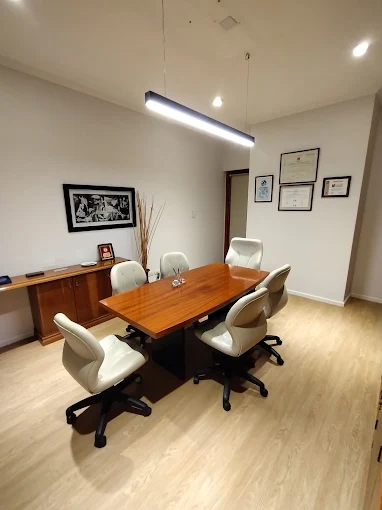

Derecho Civil y Comercial
Contratos, obligaciones y cobros; conflictos entre particulares o con empresas; daños y perjuicios; cuestiones de propiedad, locaciones y consorcios; asuntos societarios y comerciales de empresas.
Derecho Penal, Derecho Civil y Comercial y Derecho Laboral. Atención profesional en Rodríguez 1640, Rosario, Santa Fe.

Sala de reuniones del estudio. Rodríguez 1640, Rosario.
Puccinelli Abogados es un estudio jurídico con más de 30 años de trayectoria en el país y sede en Rosario. Contamos con un equipo de abogados especializados en derecho penal, laboral, civil y comercial, que trabaja con personas y empresas de todo el país.
Cada consulta se atiende de manera personalizada por el profesional a cargo del caso, con un trato humano y cercano que para el estudio es innegociable. Estamos atentos a cada inconveniente que surja y trabajamos para llevar a la mesa la solución más precisa posible. El estudio ofrece atención presencial y a distancia.
Escuchar la situación de cada persona y sostener un ambiente cálido y de buen trato en cada instancia del caso.
Análisis técnico del expediente y del marco normativo aplicable antes de definir cualquier curso de acción.
Toda la información que se comparte con el estudio está amparada por el secreto profesional.
Seguimiento del caso, respuesta ante cada inconveniente e información clara sobre el estado del expediente.
Contratos, obligaciones y cobros; conflictos entre particulares o con empresas; daños y perjuicios; cuestiones de propiedad, locaciones y consorcios; asuntos societarios y comerciales de empresas.
Defensa en causas penales en todas sus etapas, representación de la persona denunciante o querellante, asistencia en declaraciones y audiencias, y asesoramiento ante una investigación en curso.
Despidos y liquidaciones finales, registración deficiente del empleo, accidentes y enfermedades del trabajo, reclamos por diferencias salariales, y asesoramiento a empleadores en relaciones laborales.
Un equipo de abogados con especialización en penal, laboral, civil y comercial, que trabaja de manera conjunta sobre cada caso.
Director
“Muy recomendable, inmejorable atención profesional a la hora de soluciones y consultas. Gran servicio.”
“Gracias Claudio por tu servicio, amabilidad y profesionalismo en todos los temas en los que me ayudaste. Suelen ser cuestiones muy sensibles y con su gran experiencia en su espalda me ha ayudado de manera excepcional. Abrazo al equipo!!”
“Claudio y todo su equipo son excelentes profesionales, el asesoramiento es claro y con mucha precisión. Respondieron claramente sobre las consultas realizadas y sus intervenciones fueron concretas y satisfactorias ante mis requerimientos.”
Ejercicio profesional continuo en el país desde el inicio del estudio, con sede en Rosario.
Las condiciones de trabajo y los honorarios se definen antes de iniciar el caso, conforme a la ley arancelaria vigente.
Quien recibe la consulta es quien lleva el expediente, sin intermediarios, durante todo el proceso.
Cada etapa del expediente se informa sin tecnicismos innecesarios, para poder decidir con la información completa.
Cada caso tiene su propia duración y complejidad. Estas son las etapas de trabajo habituales del estudio.
Una entrevista para escuchar la situación, revisar la documentación disponible y responder las primeras dudas.
Estudio del marco normativo y de la prueba, para determinar las vías legales disponibles y sus implicancias.
Se acuerda con la persona el curso de acción a seguir, las etapas previstas y las condiciones de trabajo del estudio.
Presentaciones, audiencias y gestiones a cargo del estudio, con información sobre el estado del expediente en cada etapa.
Es una entrevista con el abogado que va a llevar el caso. Se expone la situación, se revisa la documentación disponible y se explica el marco legal aplicable y las vías posibles, con sus implicancias. Puede ser presencial en el estudio o a distancia, según lo que resulte más práctico.
Sí, la primera consulta tiene costo. Es un honorario por el tiempo de análisis y el asesoramiento que se brinda en la entrevista, y se informa al momento de solicitar el turno, antes de concurrir.
Se acuerdan por escrito antes de iniciar cualquier trabajo, conforme a la ley arancelaria vigente y a la complejidad del asunto. En la entrevista se explica la modalidad que corresponde al caso y las condiciones de pago, para que no queden costos imprevistos.
Toda la información que se comparte con el estudio está amparada por el secreto profesional previsto en el Código de Ética, incluso si el caso no llega a iniciarse. No se difunden datos del caso ni la identidad de las personas involucradas.
Todo lo que tenga a mano y se relacione con el asunto: contratos, recibos de sueldo o telegramas en cuestiones laborales, escrituras o documentación de dominio en temas civiles, cédulas de notificación, y el número de expediente si ya existe una causa iniciada. Si no cuenta con documentación, la consulta se puede realizar igual.
Puede escribirnos por WhatsApp o dejar sus datos y el motivo de la consulta. Nos comunicamos para coordinar una entrevista.
Escribir por WhatsAppSe abrió su programa de correo con la consulta redactada a puccinelliabogados@gmail.com. Solo falta confirmar el envío desde ahí. Si no se abrió automáticamente, puede escribirnos directamente a esa dirección.